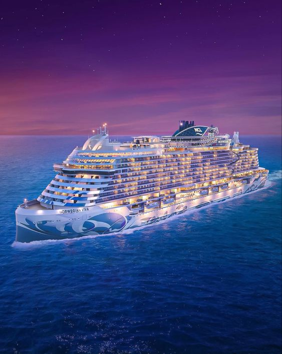

Podróż zapewnia nowoczesny Prom "Atlas"

Ten luksusowy statek, podróżujący do miasta Kresu Oceanu, jest prawdziwym majestatem na wodach oceanicznych. Oferując najwyższy poziom komfortu i luksusu, statek przyciąga bogatych i wpływowych pasażerów z całego świata.
Na pokładzie znajdują się liczne miejsca, w których pasażerowie mogą spędzić czas. Na przykład, obszerna biblioteka z bogatą kolekcją książek, salon z fortepianem i różne bary oferujące najwyższej jakości alkohole i przekąski.
W centralnym punkcie statku znajduje się wielki hol, pełen kryształów i rzeźb, którego sufit jest dekorowany malowidłami przedstawiającymi sceny z mitologii greckiej. Jest to idealne miejsce do spotkań i rozmów.
Na pokładzie znajduje się również wiele restauracji, w tym jedna z wykwintnymi daniami kuchni francuskiej, druga z włoskimi specjałami, a jeszcze inna z kuchnią azjatycką. Pasażerowie mogą też skorzystać z różnych atrakcji, takich jak baseny, siłownie, spa i sala balowa.
Statek ma również kilka kabin apartamentowych, każda z nich z własnym balkonem i panoramicznym widokiem na ocean. Wszystkie kajuty są wyposażone w najnowsze technologie, a ich wystrój utrzymany jest w eleganckim stylu, który przypomina epokę Belle Époque.
To niesamowite dzieło sztuki i inżynierii oferuje pasażerom wyjątkową podróż, pełną luksusu i komfortu.